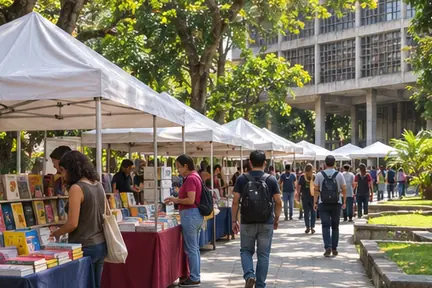

Entrada libre
Vie. 27 nov. · Consulta la programación
UCAB, campus Montalbán
Feria del Libro del Oeste de Caracas
Detalles del evento
Último día de la feria del libro de la UCAB, con actividades culturales gratuitas y libros a la venta.